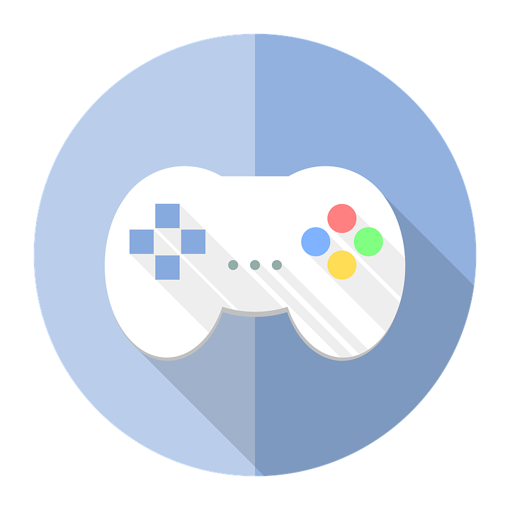
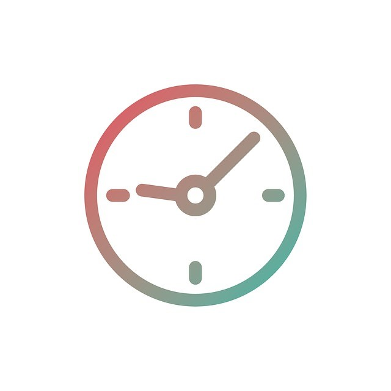
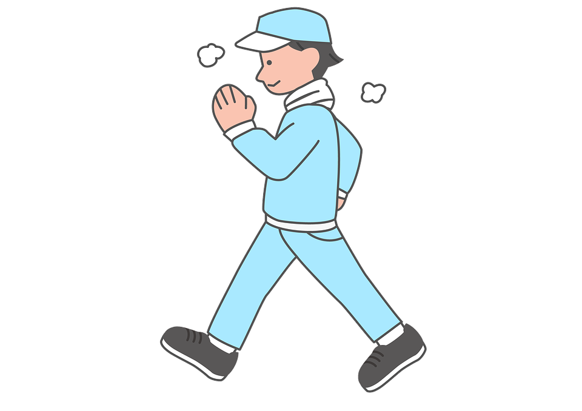

게임 중독1.게임 중독의 개요게임 중독이란 정상적인 일상생활에 지장을 줄 정도로 게임에 몰두하는 상태이다.
출처 : https://theopen1.tistory.com/121
2. 게임 중독 증상 및 치료게임 중독의 증상으로는 게임을 너무 많이 함으로서 일상생활 패턴이 망가진다.
또한 가족 또는 친구들과 보낼 수 있는 시간이 줄어 유대관계가 나빠지고 폭력적인 게임을 할 때 폭력적으로 변할 수 있다.
치료방법으로는 다음의 2가지 치료 방법이 있다.
1. 게임 사용 시간을 정한 후 지킨다.
2. 운동같은 취미생활을 통해 게임중독을 떨쳐낸다.
출처 : 네이버 지식백과, 국가건강정보포털
배경사진 출처 : http://www.bloter.net/archives/188405
돌아가기